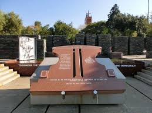

Historical Places in Johannesburg
Hector Pieterson Memorial Museum

- Remembers the job of the country's students in the battle against apartheid and specifically the role played by younger students who participated in the Soweto protests of 1976
- It was named after a 12-year old named Hector Peterson who was short during a protest
- The museum honours the individuals who passed on in the uprisings, and celebrates the students' role in the battle for freedom
Johannesburg Art Gallery
.jpg)
- Its the biggest gallery on the subcontinent, with a collection larger than that of the South African National Art Gallery in Cape Town
- The gallery currently has in at most 9 000 fine arts in its assortment and includes 15 exhibition halls and sculpture gardens.
- The gallery likewise has significant property of Southern African customary traditional and artefacts
Walter Sisulu National Botanical Garden
.jpg)
- There is a beautiful waterfall and people set up picnics there to witness the beautiful nature
- home of a breeding pair of Verreaux's Eagles that home in the cliffs close by the a waterfall
- It has Over 600 plant species and 220 bird species, just as various reptile and little vertebrates like antelope and jackal